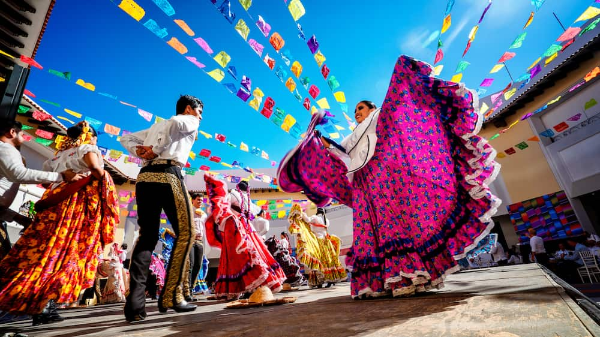
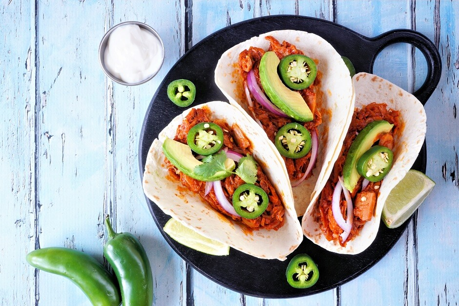
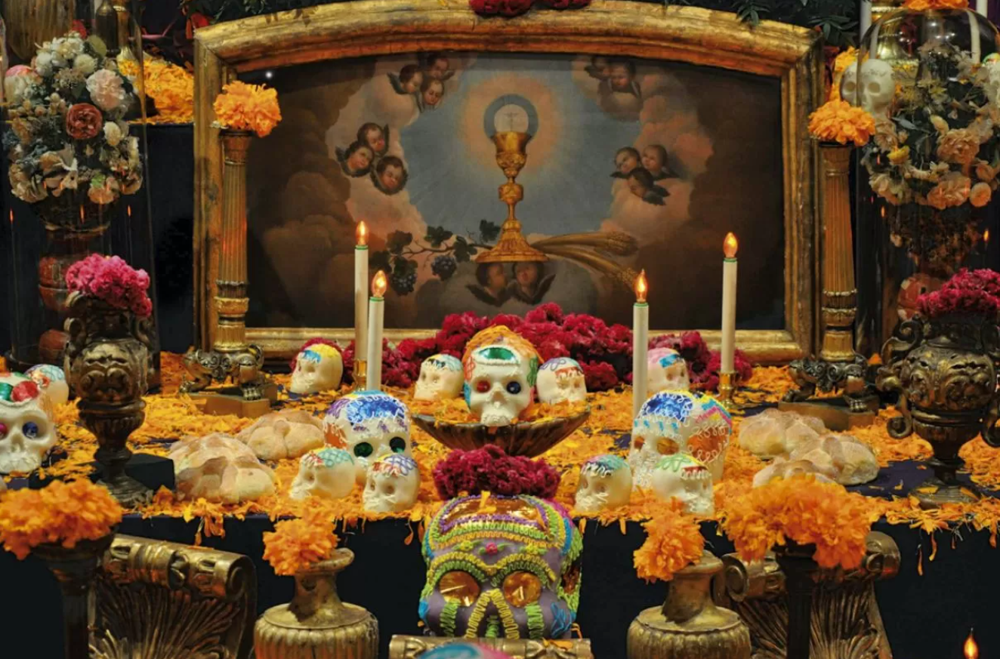
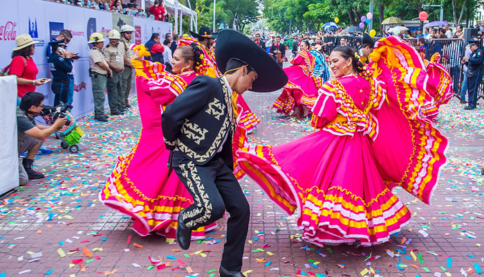

Culinária
A culinária mexicana é uma fusão de tradições indígenas e influências espanholas, conhecida por sua diversidade e uso de ingredientes como milho, feijão, pimentas, abacate e tomate.
1. Tortilla
As tortillas são pães parecidos com panquecas e feitos com o ingrediente-chave da cozinha mexicana: o milho. Você provavelmente já as viu sendo usadas para o preparo dos burritos, recheadas com feijão e carne, por exemplo. Elas também existem na versão de trigo, usadas para se fazer o taco – mais amarelinho e mais crocantes na hora de morder em comparação ao burrito. O formato das tortillas sugere uma alternativa ao uso de talheres, já que elas permitem um fácil manuseio e a colocação de recheios variados, além de serem muito nutritivas por causa da sua base.
2. Machaca e chilorio
Usados como recheio de burritos, a machaca (foto) é um prato de carne-seca que pode ser preparado de maneiras diferentes em cada estado do país e que leva, nas receitas, desde cebola e alho até tomate-cereja e pimenta mexicana. Já o chilorio é a carne de porco “desyerbada”, ou seja, desfiada. Tanto um quanto o outro levam temperos característicos e saborosos, que variam muito, dando versatilidade aos recheios. A machaca com huevo, por exemplo, é a carne-seca desfiada e misturada a ovos mexidos, consumida, geralmente, acompanhada por tortillas de farinha de trigo.
3. Cochinita pibil
Um dos pratos mais tradicionais do México e de origem maia, a cochinita pibil segue uma técnica de preparo muito antiga, desenvolvida pelos indígenas na região da província de Yucatán. Feita de carne de porco preparada com molho de laranja azeda e cebola roxa, a cochinita leva muitos condimentos para aumentar ainda mais o seu sabor. Por exemplo: cominho, canela, vinagre, sal e pimenta-preta. Todo mundo precisa provar! Ela é assada enrolada em folhas de bananeira e em fornos montados em buracos, chamados de pibiles. Daí o nome da receita.
4. Chili com carne
Mais um prato de origem asteca, criado por volta do século XV, o chili é um tipo de guisado (ensopado) picante, que leva carne, feijão e tomate, além de, claro, muita pimenta! Tradicionalmente servido em vasilhas de cerâmica bem decoradas, ele costuma ser consumido com nacho, aquele petisco mexicano sequinho à base de milho e com ajuda de uma colher. Prático e delicioso.

5. Quesadilla
Tortilla grelhada com muito, muito queijo e bem recheada, com carne moída, frango ou até camarão. Gostou? Essa é a quesadilla! Queso (queijo em espanhol) + tortilla. Fica uma delícia! Pode ser servida dobrada ou mesmo aberta, com o recheio caprichado entre o queijo e o pãozinho. A que você vê na foto tem frango.
6. Guacamole
Uma receita tão famosa que é possível que alguém já tenha consumido sem saber nem que ela vem do México! O guacamole está em todo lugar por lá e por aqui no Brasil também, mas em solo mexicano o abacate, sua matéria-prima, é visto como um alimento sagrado. Pelo menos por vários dos povos originários. O prato se parece com um purê de avocado (abacate), que leva limão, vinagre, sal, coentro e pimenta, podendo ainda ser complementado com pimentões e cebola roxa. Ele é consumido com nachos, como o chili, ou usado no recheio de tortillas. Também pode aparecer acompanhando outros pratos típicos: não se espante.
Voltar para o início